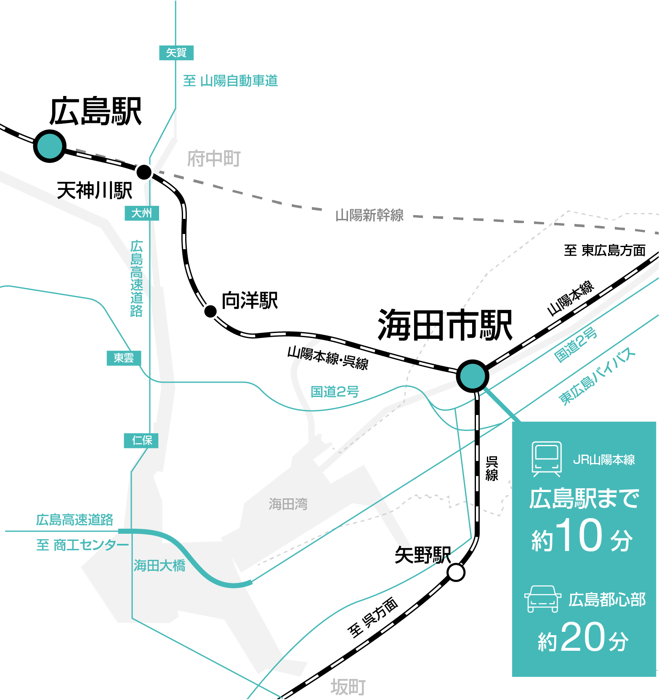
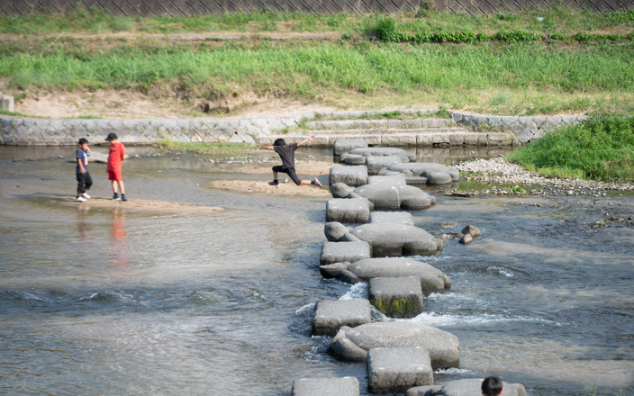
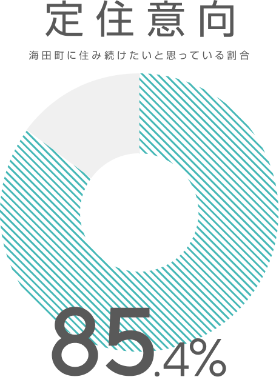
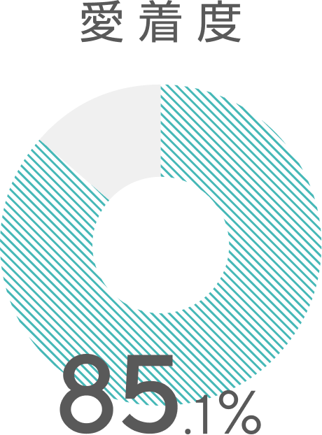
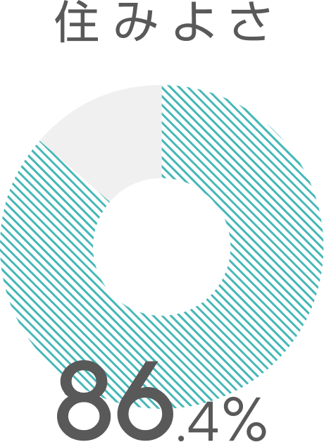

Kaitaful Days.
ABOUT KAITA
都心に近く、自然も豊かな「ちょうどいい」まち
海田町は、広島県の南西部、広島市中心部から約10km圏内。
電車では、JR海田市駅から広島駅へ約9分。国道2号と31号が交わる交通の要衝であり、広島高速や山陽自動車道へのアクセスもスムーズな、アクセス良好な立地です。
都市の利便性と自然が調和するこのまちには、四季の移ろいを感じる日浦山や、水辺の憩いの場である瀬野川など、豊かな自然にも恵まれています。
生活に必要な施設がコンパクトにまとまっていることから、子育て世代をはじめ多くの笑顔があふれ、「あなたらしい、ちょうどいい暮らし」が次々とうまれています。

海田町の魅力
-
抜群のアクセスと生活利便性
JR山陽本線・呉線が乗り入れる海田市駅から広島駅までは最短約9分。町内にはスーパーや病院などの生活インフラがコンパクトにまとまっており、毎日の暮らしを支える高い利便性を誇ります。
-

豊かな自然と歴史ある街並み
日浦山や瀬野川など、身近に自然を感じる環境。宿場町として栄えた歴史情緒あふれる景観も魅力です。
-
充実した子育て・教育環境
妊娠期から子育て期まで切れ目のない支援体制を整え、安心して子どもを産み育てられる環境づくりを進めています。地域全体で子どもたちの成長を見守る、温かいコミュニティが根付いています。
数字で見る海田町の魅力
- 住み心地が良いと感じる88.0%
- この街に住み続けたい90.5%
- 市民の声が市政に反映されている82.0%
- 街の自然に満足している82.7%
- 市民の声が市政に反映されている82.0%
みんなに愛される海田町



Kaitaful Days.
KAITA TOWN 70 STORIES
海田町の魅力を再発見する70の物語を公開。先人たちが築き上げた歴史と文化、そして未来へと向かう新しい息吹。海田町を彩る70の魅力（Kaitaful）を紐解きます。